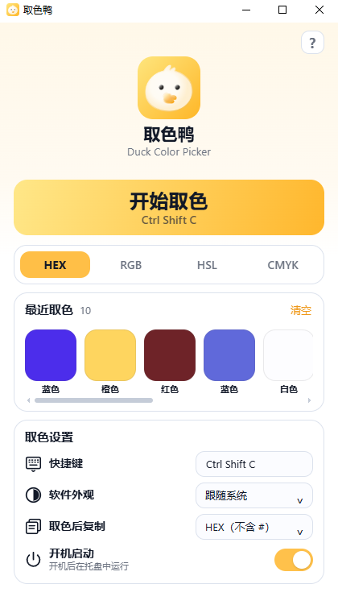

![]()
⌨
全局快捷键
默认 Ctrl / Command + Shift + C，随时从任意软件中唤起。
取色鸭 Duck Color Picker 是一款轻量中文屏幕取色器。按一个快捷键唤起，鼠标移动实时看颜色，单击即可复制需要的色值。

从屏幕取色、中文命名到自动复制与历史记录，只保留设计工作中会反复使用的功能。
默认 Ctrl / Command + Shift + C，随时从任意软件中唤起。
除了色值，还会显示直观的普通中文颜色名称。
HEX、RGB、HSL、CMYK 自由选择，复制格式也能指定。
单击确认后自动复制目标格式，减少重复操作。
自动保存最近取过的颜色，常用色不用重新找。
支持多屏与缩放坐标换算，在不同 DPI 下也能顺畅取色。
延续软件本身的奶油白与暖黄色视觉语言，把取色按钮、格式切换、历史记录和常用设置收在同一屏。
目前支持 Windows 与 macOS；macOS 发布 Apple Silicon + Intel 通用版本，Windows 提供 64 位安装包。
屏幕取色需要读取像素颜色，因此首次使用会请求“屏幕与系统音频录制”权限。
可以。快捷键、主题、复制格式、开机启动等都可以在主界面中直接设置。
是，源代码与版本发布都托管在 GitHub。